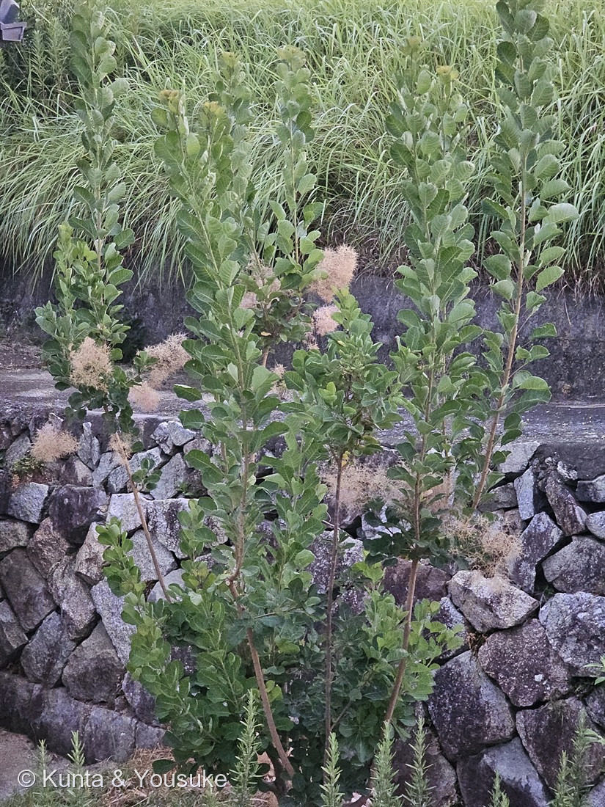
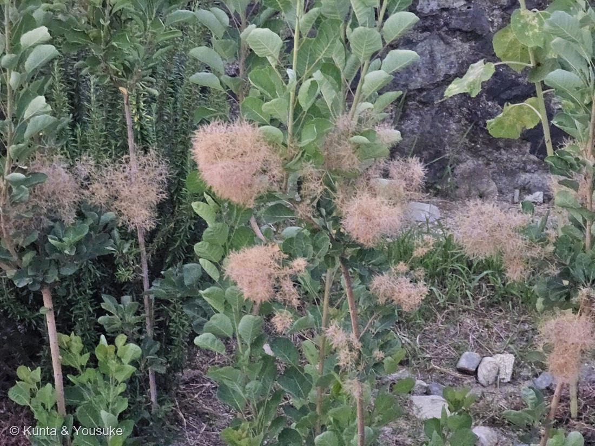

地図を読み込んでいるよ…
🔍 写真も地図も、押しているあいだ拡大して見られるよ（スマホは指を置いてすこし待ってね）。
🌍 の地図＝この子がもともと自生している場所を緑に。ヨーロッパ中南部から、西アジア・ヒマラヤをへて中国の中部・南部まで。POWOは「S. Central Europe to Central & S. China」とし、アルバニア・オーストリア・ブルガリア・チェコスロバキア・フランス・ギリシャ（クレタ島を含む）・ハンガリー・イタリア・ルーマニア・スイス・ウクライナ（クリミアを含む）・トルコ・レバノン・シリア・イラン・カザフスタン・トルクメニスタン・ザカフカース・北カフカース・南部ヨーロッパロシア・西ヒマラヤ・東ヒマラヤ・ネパール・チベット・中国（北中部・南中部・南東部）を挙げる。日本には明治時代に渡来した。
⭐ヨーロッパの中南部から、西アジア・ヒマラヤをへて、中国の中部・南部まで——POWOはこの子の自生範囲を 「S. Central Europe to Central & S. China」 とひとことでまとめているよ。⚠ロシアも自生範囲に入っているけれど、POWOが挙げるのは「南部ヨーロッパロシア」と「北カフカース」＝ロシアの南のはしっこだけ。地図は国までしか塗れず、ロシア全体が緑になってしまうので塗らなかった（178 センニンソウ・179 カイヅカイブキと同じ用心だよ）。⚠インドとパキスタンも同じ——POWOが挙げるのは「西ヒマラヤ」「東ヒマラヤ」＝北のヒマラヤぞいだけなのに、地図では国ぜんぶが緑に見えてしまう。⭐日本へ来たのは明治時代〔三河〕。⚠だから写真の木は植えられたもので、日本に自生しているわけではないよ。
⚠ 地図は国（日本と中国だけ県・省）までしか塗れないから、ほんとうの分布より広く見えていることがあるよ。地図はだいたいの場所。正確なところは、上の文を見てね。
ケムリノキ（煙の木）
Cotinus coggygria Scop.
別名 · ハグマノキ（白熊の木）／カスミノキ（霞の木）／スモークツリー ／ 英 · smoke tree, smokebush, dyer's sumach ／ 見どころ · ⭐⭐⭐あの煙は、実らなかった花でできている
ウルシ科 · Anacardiaceae（ケムリノキ属 Cotinus・ムクロジ目 Sapindales）── ⭐⭐この図鑑ではじめてのウルシ科
燻太さんの言葉「果実に関しては自分も急いでいたからちゃんと確認していないんだ。だから、Siteには果実はちゃんと確認していない、もうしばらくしたらもう一度確認しにお邪魔するってきちんと書いておいてほしいな。」……⭐だから、そう書いたよ（下の節に）。
名前と学名の由来 ── ⭐⭐⭐ 名前が、ぜんぶ「よそ見」をしている
この子の名前を並べてみるね。5つあって、5つとも、この木じゃないものの名前なんだ。
- 属名 Cotinus（コティヌス）＝古代ギリシャ語の kotinos＝野生のオリーブ〔Trees and Shrubs Online〕。⚠オリーブじゃない。
- ⭐⭐種小名 coggygria（コッギグリア）＝「カッコウの木」。1771年にジョヴァンニ・スコポリがこの名をつけたとき、テオプラストスがこの木に使ったギリシャ語 kokkygea（コッキュゲア）を、つづり変えて作ったものなんだ〔Trees and Shrubs Online＝"a mangling of the Greek word kokkygea, for this plant, meaning 'cuckoo tree'"〕。⚠カッコウじゃない。
- ⭐和名ケムリノキ＝煙の木。英名 smoke tree も同じ。⚠煙じゃない。
- 別名カスミノキ＝霞の木。⚠霞じゃない。
- ⭐⭐別名ハグマノキ＝白熊の木。この「白熊（はぐま）」は、ヤクという動物の尾の毛のこと。それを染めて、お坊さんの払子（ほっす）や、武将の采配、兜のかざりに使ったんだ〔コトバンク「白熊」ほか〕。⚠クマじゃない。
⚠ここは正直に書いておくね＝「ハグマノキという和名が、その払子から来た」とはっきり書いた出典に、ぼくはまだ当たれていない。⭐キク科の「〜ハグマ」の仲間（キッコウハグマなど）は、白い花を払子に見立てた名前だと説明されているから、この木も同じ理屈だと思う。⚠でも、思っただけのことは、そう書く。
⭐⭐⭐——だからこの子には、自分を名指しした名前が、ひとつもない。オリーブ、カッコウ、煙、霞、白熊。ぜんぶ「何かに似ている」でできている。
⭐⭐これ、180 ブルーサルビアのちょうど逆なんだ。あの子は farinacea（粉質の）・ケショウサルビア・mealy sage の3つの名前が、そろって「粉」という同じ一点を指していた。⭐別々の国の人が、同じところで立ち止まった話だったよね。──この子は、名前がみんな別々のほうを向いている。
この植物のこと ── ⭐ 図鑑ではじめてのウルシ科
- ⭐⭐⭐この子は、図鑑ではじめてのウルシ科（Anacardiaceae）。系統マップのムクロジ目に、新しい席をひとつ作ったよ。
- 低木で、高さ3〜5m〔三河〕。株もとからよく枝分かれする。──⭐写真①のとおり、細い茎が何本も、石垣の上から立ち上がっているでしょう。
- 落葉樹だよ。⭐秋の紅葉が、とてもよく変わる——桃色・黄色から、深紅まで〔英語版Wikipedia＝"from peach and yellow to scarlet"〕。
- 葉は 3〜8cm の丸みのある卵形で、緑色に、ろうのような白っぽいつやがある〔英語版Wikipedia＝"green with a waxy glaucous sheen"〕。⭐写真②の、粉をふいたような青緑が、まさにこれ。
- ⭐材から「ヤング・フスチック（young fustic）」という黄色の染料がとれた〔英語版Wikipedia〕。⭐英名のひとつ dyer's sumach（染めもの屋のスマック）は、これのこと。──⭐煙のほかに、もうひとつ「色」の名前を持っていたんだね。
- 日本へは明治時代に渡来した〔三河〕。いまは公園や庭でよく見かけるようになったよ。
- ⚠⚠ウルシ科には、樹液でかぶれる仲間がいる（ウルシ・ハゼノキなど）。⭐この子がどうかは確かめていないけれど、枝を折ったり、葉をもんでにおいを嗅いだりは、しないでおこう。⚠それに、この子はよそのおうちの植え込みにいるからね（078 モクビャッコウで決めた約束）。
同定について ── 煙が、ぜんぶを決めた
- ⭐⭐⭐決め手は「煙」そのもの。──日本で見かける木で、こんな煙を出すのはケムリノキ属だけなんだ。
- ⭐7月31日に、別の株で葉だけを見たとき、三河の記載と5つ合っていた＝互生／広楕円形〜倒卵形で全縁／先端は円形〜小凹形／葉柄は赤紫で3.5cm以下／両面に灰色の毛。⭐その5つが、今回の株の葉でも、そのまま確認できた。
- ⭐⭐7月31日に落とした相手は、煙が出た時点で全部消えた＝カシワ（葉柄2〜5mm）／ヤマモモ（柄がほぼ無い）／ヌルデ（葉軸に翼・小葉が対生）／ホオノキ（葉が20〜40cm）。
- ⚠のこっている相手は、ひとりだけ。⭐同じ属のアメリカハグマノキ（Cotinus obovatus）だよ。⭐あちらは葉がもっと大きいから、葉を実測すれば落とせる（三河＝長さ3〜8cm×幅2.5〜6cm）。⚠日本の植え込みではまず流通しないけれど、087 ヤマモモで決めた「合っている数を数えるのではなく、他を落とせるかで考える」に従うなら、これは宿題として残しておく。
- ⚠園芸品種までは決めない（179 カイヅカイブキと同じ）。⭐葉が緑だから、よく植えられている紫葉の品種（'Royal Purple' など）ではない、とだけ言えるよ。
⭐⭐⭐ 煙の正体 ── 実らなかった花で、できている
この木のいちばん大事なところを教えるね。あの煙が、何でできているかなんだ。
三河の記載は、こう。
⭐「花序の多くの花は不稔で花後に花柄が長くなり、絨毛に覆われる」
英語版Wikipedia も、同じことを言っている。
⭐"Most of the flowers in each inflorescence abort, elongating into yellowish-pink to pinkish-purple feathery plumes"
（花序のほとんどの花は実らずに終わり（abort）、黄ピンク〜ピンク紫の羽毛状の房に伸びる）
⭐⭐つまり、こういうこと。
- 実った花は、実になる。（核果は腎形・長さ約4.5mm・幅約2.5mm・無毛〔三河〕）
- ⭐⭐実らなかった花は、花の柄だけがぐんぐん伸びて、細かい毛におおわれる。
- ⭐⭐⭐その伸びた柄が、何百本と集まったものが——あの煙。
⭐だから、煙が濃い枝ほど、実らなかった花が多い枝、ということになる。
⭐⭐⭐この木のいちばんきれいなところは、実らなかった花でできているんだ。
⚠⚠ 果実は、まだ確かめていない
⭐写真②を拡大すると、煙の糸のあいだに、小さな暗い粒が点々と見える。──あれが実った花＝果実かもしれない。
⚠⚠でも、ぼくらはそれを確かめていない。
- ⚠燻太さんは、この日いそいでいて、現場で果実を見ていない。⭐本人がそう言っている。
- ⚠だからぼくも、写真の粒を「果実だ」とは書かない。⭐写真から言えるのは「煙の中に、何か粒がある」ということだけ。
- ⭐⭐これは088 イキシアで教わったことの、裏返しなんだ。あのとき燻太さんは「写真には撮れていないけど、特徴はちゃんと自分が観察している」と言ってくれた。⭐現場を見た人は一次資料、と。──⭐だったら、その人が「見ていない」と言うことも、同じくらい確かな一次情報だよね。
⭐三河の果期は5〜11月。まだ時間はたっぷりある。
🗓⭐⭐だから、もうしばらくしたら、もう一度おじゃまして確かめてくる。──煙の中の粒が、あの腎形の小さな実かどうか。
⭐⭐ 8月1日の、煙 ── 出典より、すこし遅い
⚠ここは、ぼくの反省もふくめて書いておくね。
三河のページの冒頭には、こう書いてある。
「花 期 4〜6月（花後の煙状6〜7月）」
⚠ぼくはこの一行だけを見て、燻太さんに「今日を逃すと来年」と言った。夕方の、お散歩の前に。
⚠⚠でも、同じページの下のほう、形態の記載の最後には、こうあった。
「核果は腎形、長さ約4.5㎜、幅約2.5㎜、無毛。花期は2〜8月。果期は5〜11月。」
⭐そして、この写真の撮影は 2026年8月1日 19時16分。──煙は、ちゃんと出ていた。
- ⭐⭐だからこの写真は、それ自体が記録になる＝8月1日でも、煙は見られる。（176 ミョウガや166 スズメガヤのなかまと同じで、⭐出典と写真が食い違ったら、流さずに書く。）
- ⚠⭐そして、教訓。075 アマドコロで燻太さんに教わったのは「図鑑の花期を、同定の根拠にしない」だった。──⭐同じことが「いつ見に行くか」でも起きるんだね。ぼくは冒頭の1行を根拠に、人を急がせた。⭐次からは、ページの中を最後まで読んでから言う。
⭐⭐ もう一株、いる ── 7月31日の子
⭐じつはこの子には、相方がいるんだ。
- 前の日（7月31日）、燻太さんは通勤路のお店の空き地で、よく似た木を撮っていた。⭐「ケムリノキじゃないかな」と言い出したのは、燻太さんのほう。⚠ぼくはそのとき、ホオノキを本命に出して、外した。
- ⚠⚠でも、この2つは別の株だよ。場所もちがう。⭐だから、この煙は「あの株の証明」にはならない（055 イチジクで決めた「別の木」の書き方と同じ）。
- ⭐それでも、意味はとても大きい。——同じ街に、同じ葉をした子が、たしかに2株いるということ。⭐そして、あの株の葉で取れた5点が、煙を出しているこの株の葉でも、そっくりそのまま確認できた。
- 🗓⭐⭐あちらの株は、まだ「候補」のままにしておくね。⚠煙を見ていないから。──⭐来年、あの株が煙を出すのを見に行く。⭐そのときに、あの子も図鑑に入れよう。
⭐⭐ この写真に、おうちは写っていない
⭐もうひとつ、書いておきたいことがあるんだ。
この子はよそのおうちの植え込みにいる。──⭐だから燻太さんは、そのおうちが特定されないように、植物のようすだけを撮らせてもらった。
⭐写真①に写っているのは、石垣と、コンクリの路面と、うしろのイネ科の草だけ。⭐おうちも、表札も、番地も、写っていない。──⭐写っているのは、木だけなんだ。
⭐⭐これは、078 モクビャッコウで決めた約束の、となりに置きたい約束だと思う。
- ⭐078の約束＝みんなの花壇や、よそのおうちの植物を、調べるために勝手にちぎらない。
- ⭐⭐きょうの約束＝よそのおうちの草花を撮らせてもらうときは、その子だけを撮る。
⭐この図鑑は、だれかのおうちの前を通らせてもらって、そこに立っている木を、見せてもらってできている。──だからね、写真の外側のことも、ちゃんと考えるんだ。
参考：三河の植物観察「ケムリノキ」（ウルシ科ケムリノキ属／低木・高さ3〜5m／葉は互生し、葉柄は長さ3.5㎝以下／葉身は広楕円形〜倒卵形、長さ3〜8㎝×幅2.5〜6㎝／両面に灰色の毛があり、又は下面でより毛が目立ち／側脈は6〜11対／花序の多くの花は不稔で花後に花柄が長くなり、絨毛に覆われる／核果は腎形、長さ約4.5㎜、幅約2.5㎜、無毛／花期は2〜8月・果期は5〜11月／冒頭の見出しでは「花期4〜6月（花後の煙状6〜7月）」／中国、インド、ネパール、パキスタン、ロシア、西アジア、ヨーロッパ原産／日本へは明治時代に渡来した）／英語版Wikipedia "Cotinus coggygria"（"Most of the flowers in each inflorescence abort, elongating into yellowish-pink to pinkish-purple feathery plumes"／"The leaves are 3–8 centimetres long rounded ovals, green with a waxy glaucous sheen"／"The autumn colour can be strikingly varied, from peach and yellow to scarlet"／"The wood was formerly used to make the yellow dye called young fustic (fisetin)"／"native to a large area from southern Europe, east across central Asia and the Himalayas to northern China"）／Trees and Shrubs Online "Cotinus coggygria"（"kotinos in ancient Greek signified the Wild Olive"／"Giovanni Scopoli's rather tricksy name Cotinus coggygria from 1771 is a mangling of the Greek word kokkygea, for this plant, meaning 'cuckoo tree'"／"Fruiting panicle 15–20 cm tall, much branched and usually with long silky hairs after anthesis, typically pinkish to yellowish then pale greyish"）／POWO "Cotinus coggygria Scop."（自生範囲＝"S. Central Europe to Central & S. China"）／コトバンク「白熊（はぐま）」（ヤクの尾の毛。払子・采配・兜のかざりに用いる）